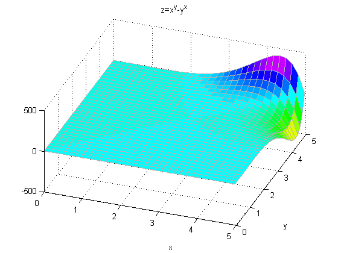
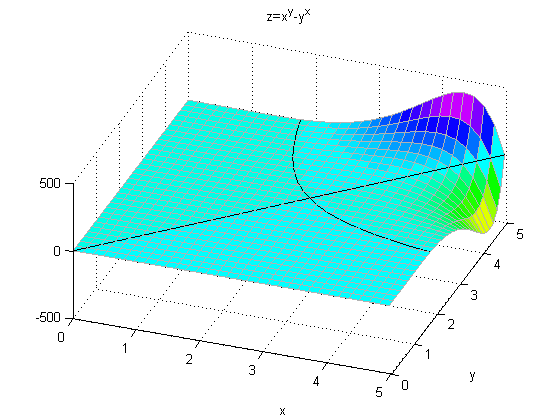

Graphical Approach to Solving Inequalities
Here is an interesting graphical approach to find out whether e^pi is greater than pi^e or not.
The question is: which is greater, e^pi or pi^e? The easy way to find out is to type it directly at the MATLAB® command prompt. But it motivates a more interesting question. What is the shape of the function z=x^y-y^x? Here is a plot of z.
%Define the mesh x=0:0.16:5; y=0:0.16:5; [xx,yy]=meshgrid(x,y); %The plot zz=xx.^yy-yy.^xx; h=surf(x,y,zz); %Set the properties of the plot set(h,'EdgeColor',[0.7 0.7 0.7]); view(20,50); colormap(hsv); title('z=x^y-y^x'); xlabel('x'); ylabel('y'); hold on;
It turns out that the solution of the equation x^y-y^x=0 has a very interesting shape. Because interesting things happen near e and pi, our original question is not easily solved by inspection. Here is a plot of that equation shown in black.
c=contourc(x,y,zz,[0 0]); list1Len=c(2,1); xContour=[c(1,2:1+list1Len) NaN c(1,3+list1Len:size(c,2))]; yContour=[c(2,2:1+list1Len) NaN c(2,3+list1Len:size(c,2))]; % Note that the NAN above prevents the end of the first contour line from being % connected to the beginning of the second line line(xContour,yContour,'Color','k');
Here is a plot of the integer solutions to the equation x^y-y^x=0. Notice 2^4=4^2 is the ONLY integer solution where x~=y. So, what is the intersection point of the two curves that define where x^y=y^x?
plot([0:5 2 4],[0:5 4 2],'r.','MarkerSize',25);
Finally, we can see that e^pi is indeed larger than pi^e (though not by much) by plotting these points on our surface.
e=exp(1); plot([e pi],[pi e],'r.','MarkerSize',25); plot([e pi],[pi e],'y.','MarkerSize',10); text(e,3.3,'(e,pi)','Color','k', ... 'HorizontalAlignment','left','VerticalAlignment','bottom'); text(3.3,e,'(pi,e)','Color','k','HorizontalAlignment','left',... 'VerticalAlignment','bottom'); hold off;

Here is a verification of this fact.
e=exp(1); e^pi pi^e
ans = 23.1407 ans = 22.4592